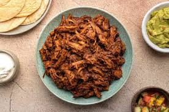

25.Sinaloa

- Platillo: Chilorio
- Ingredientes: Carne de cerdo desmenuzada, chiles secos (guajillo), ajo, comino, vinagre.
- Historia: Surge como una forma de conservar la carne por más tiempo en climas calurosos.
- Dato curioso: Se popularizó en todo México enlatado y listo para calentar, pero el original tiene un sabor más intenso.